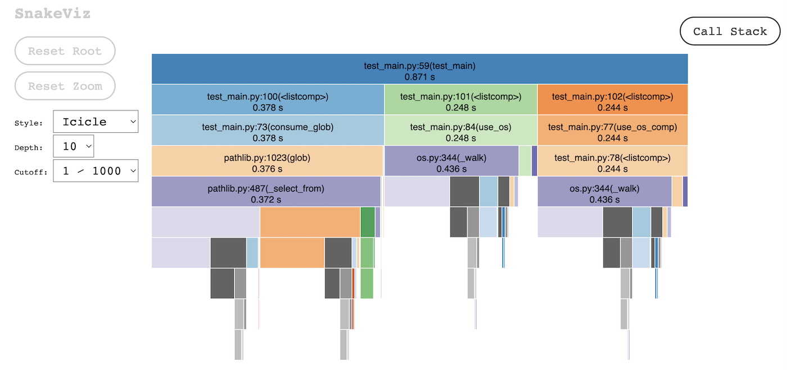
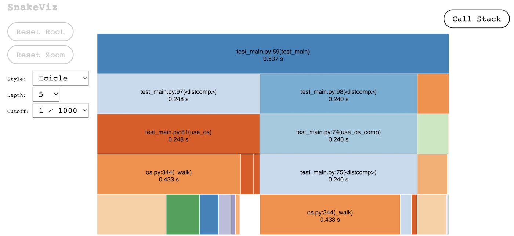
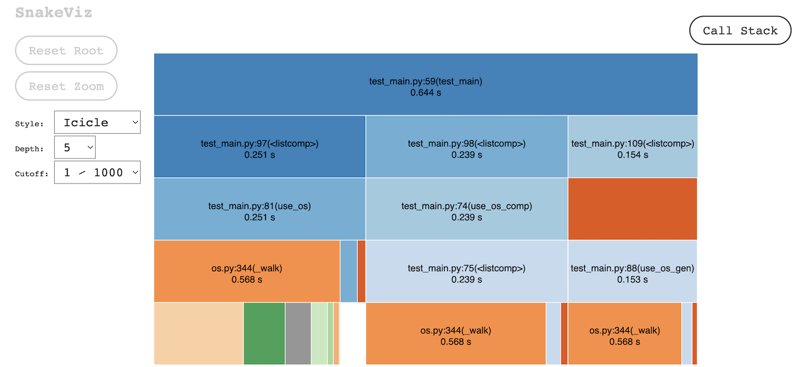

Glob v.s. OS Walk
https://github.com/AlbertoV5/python-blog
Table of Contents
1. Glob v.s. OS Walk
This article is a follow-up to “Glob generators in Python”, we are going to compare the os.walk1 to the Path.glob method2 that we used in the past, both in the context of generators.
The question we are trying to answer is if we want to use Path.glob at all or if it is better to check for specific file extensions instead of using patterns.
python --version
Python 3.10.7
We are going to use cProfile to measure the code execution and snakeviz 3 to visualize the results. We are going to use a few other modules to help us build and evaluate the tests.
import-modules
from pathlib import Path from itertools import permutations import subprocess import cProfile import logging import pstats import shutil import os
1.1. Mocks
We are going to construct a test case before writing the rest of the code. We will do so by creating a few directories and filling them with various file extensions.
In this scenario we will be searching for the file types: csv, tsv and txt. So we are going to add those extensions to a list that we will use to generate all possible permutations of the the extensions’ characters.
We are going to use set so we make sure we don’t process extra data when doing the permutations and any further processing. However, we want to include extensions with repeated letters in the data we feed to the permutation function, so that data won’t be converted to a set.
make-options
def create_options(extensions): data = list(i for e in extensions for i in list(e)) data.append("") return list(set("".join(c) for c in permutations(data, 4)))
If we print our options, we can see that we have a large number of possible file prefixes we can use for testing.
check-1
options = create_options(["csv", "tsv", "txt"]) print(len(options))
467
Before creating the files in the test directory, we are going to add a few children directories so we can test recursive search too. We are going to create 2 ’tuneable’ variables, depth and number, which will effectively bring the total amount of directories to depth ** number. Then we are going to create the directories somewhat recursively while adding each one to a directories list.
make-dirs
def create_directories(root: str, number: int, depth: int): root = Path(root).resolve() if root.is_dir(): shutil.rmtree(root) Path.mkdir(root, parents=True) # func def mk_dirs(parent, data, n, depth): if depth == 0: return 0 for i in range(n): child = parent / f"{i}" Path.mkdir(child) data.append(child) mk_dirs(child, data, n, depth - 1) directories = [] mk_dirs(root, directories, number, depth) directories.insert(0, root) return directories
Then we can separate the file extensions in different directories. We end up with = directories if we count the root directory. So we are going to separate our {{{results(=467)}}} into x files per directory.
check-2
create_directories('../tests/extensions', 3, 3) print(len(directories))
1.2. Final mock function
Finally, we create all the files spread across multiple directories and assert that there are at more files than the base number directories in each directory.
make-files
def test_makefiles(ext = ["csv", "tsv", "txt"], number = 3, depth = 3): options = create_options(ext) directories = create_directories('../tests/extensions', number, depth) n_opt = len(options) n_dir = len(directories) ratio = int(n_opt/n_dir) for i in range(0, n_dir): for j in range(i * ratio, (i * ratio) + ratio): filepath = directories[i] / f"file.{options[j]}" subprocess.run(['touch', filepath]) assert len(list(directories[i].glob('*'))) > number print('All files were created.')
All files were created.
1.3. Profiler
We will create a profiler wrapper function so we can apply it to whichever test function we want and get the profile data into a file with its name.
make-profiler
def profile(func): def wrapper(*args, **kwargs): with cProfile.Profile() as pr: path = func(*args, **kwargs) stats = pstats.Stats(pr) stats.sort_stats(pstats.SortKey.TIME) stats.dump_stats(filename=f"{path / func.__name__}.prof") return wrapper
1.4. Final Test Script
We are going to combine all previous functions into a single script and include default values for running the test, which includes generating new extensions and directories. We are also gonna create a logger instance to display all info to the pytest stdout. Finally we are going to execute each function n number of times for better profiler results.
from pathlib import Path from itertools import permutations import subprocess import cProfile import logging import pstats import shutil import os def create_options(extensions): data = list(i for e in extensions for i in list(e)) data.append("") return list(set("".join(c) for c in permutations(data, 4))) def create_directories(root: str, number: int, depth: int): root = Path(root).resolve() if root.is_dir(): shutil.rmtree(root) Path.mkdir(root, parents=True) # func def mk_dirs(parent, data, n, depth): if depth == 0: return 0 for i in range(n): child = parent / f"{i}" Path.mkdir(child) data.append(child) mk_dirs(child, data, n, depth - 1) directories = [] mk_dirs(root, directories, number, depth) directories.insert(0, root) return directories def test_makefiles(ext = ["csv", "tsv", "txt"], number = 3, depth = 3): options = create_options(ext) directories = create_directories('../tests/extensions', number, depth) n_opt = len(options) n_dir = len(directories) ratio = int(n_opt/n_dir) for i in range(0, n_dir): for j in range(i * ratio, (i * ratio) + ratio): filepath = directories[i] / f"file.{options[j]}" subprocess.run(['touch', filepath]) assert len(list(directories[i].glob('*'))) > number print('All files were created.') def profile(func): def wrapper(*args, **kwargs): with cProfile.Profile() as pr: path = func(*args, **kwargs) stats = pstats.Stats(pr) stats.sort_stats(pstats.SortKey.TIME) stats.dump_stats(filename=f"{path / func.__name__}.prof") return wrapper @profile def test_main(): log = logging.getLogger(__name__) log.setLevel(logging.DEBUG) ext = ['csv', 'tsv', 'txt'] pattern = '**/*.[ct][sx][vt$]' rootd = '../tests/extensions' outcome = {"glob":[], "os":[]} # using glob def use_glob(): for f in Path(rootd).glob(pattern): yield f def consume_glob(): outcome["glob"] = list(Path(rootd).glob(pattern)) # using os def use_os_comp(): outcome["os"] = [ f for root, dirs, files in os.walk(rootd) for f in files if f.split('.')[1] in ext ] def use_os(): for root, dirs, files in os.walk(rootd): path = root.split(os.sep) for file in files: if file.split(".")[1] in ext: outcome["os"].append(file) def use_os_gen(): for root, dirs, files in os.walk(rootd): for file in files: if file.split(".")[1] in ext: yield file # process times = 100 [use_glob() for i in range(times)] [consume_glob() for i in range(times)] [use_os() for i in range(times)] [use_os_comp() for i in range(times)] [use_os_gen() for i in range(times)] def consume_gen(gen): for file in gen: # if file.replace("file.", "") == "csv": # break if file.suffix == ".csv": break [consume_gen(use_glob()) for i in range(times)] log.debug(outcome) return Path('tests/prof') if __name__ == "__main__": ext = ['csv', 'tsv', 'txt', 'xlsx', 'jpg', 'png'] test_makefiles(ext, 5, 5) test_main()
1.5. Results
We’ll run the test with pytest.
pytest --log-cli-level=10
============================= test session starts ==============================
platform darwin -- Python 3.10.7, pytest-7.1.3, pluggy-1.0.0
rootdir: /Users/albertovaldez/python-blog
plugins: profiling-1.7.0
collected 2 items
tests/glob/test_main.py::test_makefiles PASSED [ 50%]
tests/glob/test_main.py::test_main
-------------------------------- live log call ---------------------------------
DEBUG test_main:test_main.py:113 {'glob': [PosixPath('../tests/extensions/0/1/1/file.txv'), PosixPath('../tests/extensions/1/1/2/file.cxt'), PosixPath('../tests/extensions/1/2/file.tsv'), PosixPath('../tests/extensions/2/0/0/file.csv'), PosixPath('../tests/extensions/2/0/1/file.cst'), PosixPath('../tests/extensions/2/0/1/file.tst'), PosixPath('../tests/extensions/2/1/file.cxv')], 'os': ['file.tsv', 'file.csv']}
PASSED [100%]
============================== 2 passed in 2.56s ===============================
The first result that we can see from the command line log is that the pattern will find files that overlap with the extensions we are looking for. For example: txv, cxt and tst. This may be enough downside for not considering using only glob patterns.
Then we are going to read the profiler output with snakeviz.
pip install snakeviz
snakeviz tests/prof/test_main.prof
The first time we ran the test we compared the execution time of the following functions.
| function | ttime (s) |
|---|---|
| consume_glob | 0.378 |
| use_os | 0.248 |
| use_os_comp | 0.244 |

The os.walk method is faster and more accurate as we get the exact file extensions we are looking for.
However, if we stop the generator from the glob method once a condition is met, we get a shorter execution time, as well as lesser memory usage.

When using os.walk as a generator we get a slightly slower execution time when following the previous procedure. This may just be because of how os.walk traverses the tree or because we are making a few additional checks when validating file extension.

1.6. Conclusion
Generators win any argument no matter what. The results from glob weren’t favorable as we had too many collateral file extension, mainly because of how our test was setup. This is not enough accuracy for us to support using glob patterns so making our own generator from os.walk may be the best option. We can always combine both modules for better filepath information and object-oriented features.
def walk_gen(path, extensions): for root, dirs, files in os.walk(path): for file in files: if file.split(".")[1] in extensions: yield Path(root) / file for f in walk_gen("../tests", ["py", "prof"]): print(f)
../tests/prof/test_main.prof ../tests/glob/test_main.py